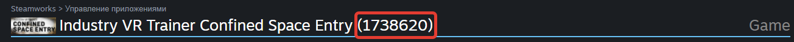

Пайплайн подготовки к билду под Сторы
Steam:
Переводим сборку под платформу “PC, Mac & Linux Standalone”.
Добавляем ассет “Steamworks.NET” (https://github.com/rlabrecque/Steamworks.NET/releases)
В файле steam_appid.txt который в корне проекта поменять AppId на id своего приложения. Для каждого тренажера свои 2 id (Free, Premium ) записать в ScriptableObject брать из в SteamWorks 
(только если ассет добавляли заново) Перезапускаем Юнити
На DontDestroyObject добавляем скрипт “SteamManager” (в данный момент он висит на объекте “TimeChecker”)
Добавляем ассет “SDK Steamworks” (https://partner.steamgames.com/downloads/steamworks_sdk.zip)
(только если ассет добавляли заново) Перезапускаем Юнити
Добавляем ассет "SteamVR Plugin" (https://assetstore.unity.com/packages/tools/integration/steamvr-plugin-32647)
Меняем “MessageControllerPlug” на объекте “TimeChecker” на версию под Steam.
Убираем настройку роста в сцене обучения и главном меню.
В зависимости от версии Free или Premium:
11.1. В скрипте “MessageControllerPlug” меняем переменную “_liceneType” на Free/Premium.
11.2. В префабе UI меняем ссылку в SelectModePanel на SelectModeFree или SelectMode
Проверяем чтобы в ProjectSettings>XR Plug-in Management в Сборках под PC был активен только OpenVR Loader.
Проверяем чтобы в Preferences>VIU Settings был активен только OpenVR.
Проверяем что все настройки плагинов применены(обычно это происходит при смены платформы сборки и включения OpenVR Loader и OpenVR) Если они будут сразу в проекте и переключать мы их будем системно то я хочу сделать таблицу какие параметры они меняют и в жесткую через код их на всякий случай применять.
Создаем билд под PC в папке “OpenVRZamknutoeProstranstvo” или “OpenVRZamknutoeProstranstvoFree” в зависимости от версии приложения.
Запаковываем это всё в Zip архив с произвольным именем.
Oculus:
Добавить в проект ассет “Oculus Integration” только папку Platform (https://assetstore.unity.com/packages/tools/integration/oculus-integration-82022)
(только если ассет добавляли заново) Перезапускаем Юнити
Меняем “MessageControllerPlug” на объекте “TimeChecker” на версию под Oculus и заполняем поле "appID" в зависимости от приложения для билда(данныи можно получить с страницы приложения в сторе или из заполненого под сторы специального скриптабл обжекта).
Проверяем чтобы в ProjectSettings>XR Plug-in Management в Сборках под Android был активен только Oculus .
Проверяем чтобы в Preferences>VIU Settings был активен Oculus Android.
Проверяем что все настройки плагинов применены(обычно это происходит при смены платформы сборки и включения Oculus и Oculus Android) Если они будут сразу в проекте и переключать мы их будем системно то я хочу сделать таблицу какие параметры они меняют и в жесткую через код их на всякий случай применять.
В сцене обучения меняем модель контроллеров и картинку с контроллерами под Oculus. Так же выключаем картинки одевания и настройки шлема воовсем.
В UI меняем картинку в ControllerInfo под Oculus.
Добавляем в ProjectSettings>Player>PublishingSettings ключ подписи и вводим логин пароли от ключа и проекта.
Меняем версию в шапке ProjectSettings>Player на большую и Bundle version.
Меняем файл манифеста под Oculus.
В зависимости от версии Free или Premium:
10.1. В скрипте “MessageControllerPlug” меняем переменную “_liceneType” на Free/Premium.
10.2. В префабе UI меняем ссылку в SelectModePanel на SelectModeFree или SelectMode
Проверяем что в ProjectSettings>Player>PublishingSettings стоит галочка у Custom Main Manifest.
Устанавливаем имя проекта “VRTrainersConfinedSpace” а компанию “Goldfinchworks” .
Создаем билд под Android.
VivePort:
Устанавливаем плагин “VIVEPORT SDK” (https://developer.vive.com/resources/viveport/viveport-documentation/english/viveport-sdk/integration-viveport-sdk/unity-developers/)
(только если ассет добавляли заново) Перезапускаем Юнити
На DontDestroyObject добавляем скрипт “MainThreadDispatcher” (в данный момент он висит на объекте “TimeChecker”).
Меняем “MessageControllerPlug” на объекте “TimeChecker” на версию под Vive заполняем поле "appID" и "apiKey" в зависимости от приложения для билда(данныи можно получить с страницы приложения в сторе или из заполненого под сторы специального скриптабл обжекта).
Проверяем чтобы в ProjectSettings>XR Plug-in Management в Сборках под Android был активен только WaveXR .
Проверяем чтобы в Preferences>VIU Settings был активен WaveVR.
Проверяем что все настройки плагинов применены(обычно это происходит при смены платформы сборки и включения WaveXR и WaveVR) Если они будут сразу в проекте и переключать мы их будем системно то я хочу сделать таблицу какие параметры они меняют и в жесткую через код их на всякий случай применять.
Добавляем в ProjectSettings>Player>PublishingSettings ключ подписи и вводим логин пароли от ключа и проекта.
Меняем версию в шапке ProjectSettings>Player на большую.
В зависимости от версии Free или Premium:
10.1. В скрипте “MessageControllerPlug” меняем переменную “_liceneType” на Free/Premium.
10.2. В префабе UI меняем ссылку в SelectModePanel на SelectModeFree или SelectMode
Устанавливаем имя проекта “VRTrainersConfinedSpace” а компанию “Goldfinchworks” .
Меняем файл манифеста под Vive.
Проверяем что в ProjectSettings>Player>PublishingSettings стоит галочка у Custom Main Manifest.
Создаем билд под Android.